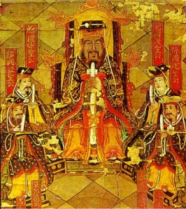

Sacred Texts Confucianism
Buy this Book at Amazon.com
|  | The Ethics of Confuciusby Miles Menander Dawson[1915] |
This is a study of the ethical system presented in the Confucian texts, organized by topic. This book was reprinted in 1939 under the title 'The Basic Thoughts of Confucius,' and in 1942 as 'The Basic Teachings of Confucius.'